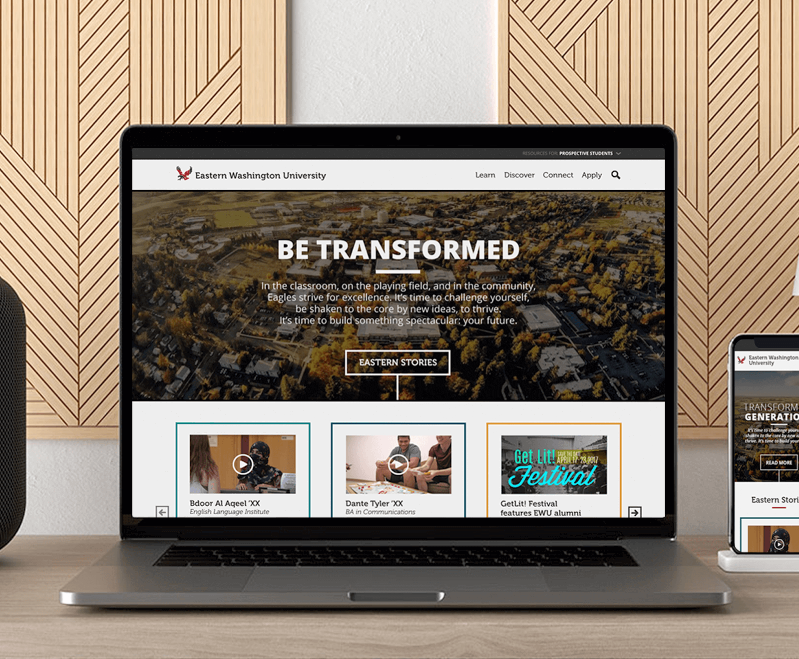

EWU.EDU Redesign
For the 2018 EWU site redesign I assisted in carrying out design and code changes on the front and back end of the Wordpress theme. Additionally, I have conducted mateinence and support in terms of browser testing, accessibility, and performance.